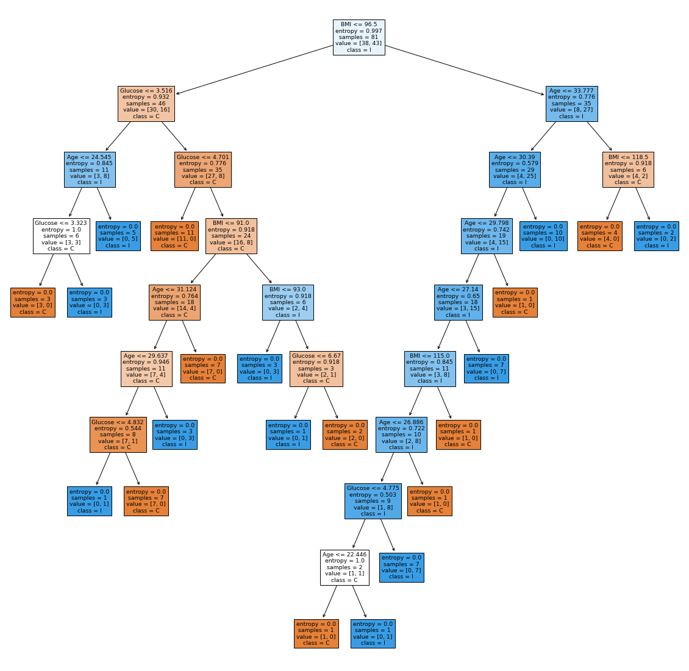

UTS
Contents
UTS#
import pandas as pd
import numpy as np
import seaborn as sns
import matplotlib.pyplot as plt
url = "https://raw.githubusercontent.com/nanda-putri/datamining/gh-pages/Data%20UTS.csv"
data = pd.read_csv(url)
data.head()
| Age | BMI | Glucose | Insulin | HOMA | Leptin | Adiponectin | Resistin | MCP.1 | Classification | |
|---|---|---|---|---|---|---|---|---|---|---|
| 0 | 48 | 23.500000 | 70 | 2.707 | 0.467409 | 8.8071 | 9.702400 | 7.99585 | 417.114 | 1 |
| 1 | 83 | 20.690495 | 92 | 3.115 | 0.706897 | 8.8438 | 5.429285 | 4.06405 | 468.786 | 1 |
| 2 | 82 | 23.124670 | 91 | 4.498 | 1.009651 | 17.9393 | 22.432040 | 9.27715 | 554.697 | 1 |
| 3 | 68 | 21.367521 | 77 | 3.226 | 0.612725 | 9.8827 | 7.169560 | 12.76600 | 928.220 | 1 |
| 4 | 86 | 21.111111 | 92 | 3.549 | 0.805386 | 6.6994 | 4.819240 | 10.57635 | 773.920 | 1 |
data.info()
<class 'pandas.core.frame.DataFrame'>
RangeIndex: 116 entries, 0 to 115
Data columns (total 10 columns):
# Column Non-Null Count Dtype
--- ------ -------------- -----
0 Age 116 non-null int64
1 BMI 116 non-null float64
2 Glucose 116 non-null int64
3 Insulin 116 non-null float64
4 HOMA 116 non-null float64
5 Leptin 116 non-null float64
6 Adiponectin 116 non-null float64
7 Resistin 116 non-null float64
8 MCP.1 116 non-null float64
9 Classification 116 non-null int64
dtypes: float64(7), int64(3)
memory usage: 9.2 KB
Finding Missing Value
data.isna().sum()
Age 0
BMI 0
Glucose 0
Insulin 0
HOMA 0
Leptin 0
Adiponectin 0
Resistin 0
MCP.1 0
Classification 0
dtype: int64
Describe data
data.describe()
| Age | BMI | Glucose | Insulin | HOMA | Leptin | Adiponectin | Resistin | MCP.1 | Classification | |
|---|---|---|---|---|---|---|---|---|---|---|
| count | 116.000000 | 116.000000 | 116.000000 | 116.000000 | 116.000000 | 116.000000 | 116.000000 | 116.000000 | 116.000000 | 116.000000 |
| mean | 57.301724 | 27.582111 | 97.793103 | 10.012086 | 2.694988 | 26.615080 | 10.180874 | 14.725966 | 534.647000 | 1.551724 |
| std | 16.112766 | 5.020136 | 22.525162 | 10.067768 | 3.642043 | 19.183294 | 6.843341 | 12.390646 | 345.912663 | 0.499475 |
| min | 24.000000 | 18.370000 | 60.000000 | 2.432000 | 0.467409 | 4.311000 | 1.656020 | 3.210000 | 45.843000 | 1.000000 |
| 25% | 45.000000 | 22.973205 | 85.750000 | 4.359250 | 0.917966 | 12.313675 | 5.474283 | 6.881763 | 269.978250 | 1.000000 |
| 50% | 56.000000 | 27.662416 | 92.000000 | 5.924500 | 1.380939 | 20.271000 | 8.352692 | 10.827740 | 471.322500 | 2.000000 |
| 75% | 71.000000 | 31.241442 | 102.000000 | 11.189250 | 2.857787 | 37.378300 | 11.815970 | 17.755207 | 700.085000 | 2.000000 |
| max | 89.000000 | 38.578759 | 201.000000 | 58.460000 | 25.050342 | 90.280000 | 38.040000 | 82.100000 | 1698.440000 | 2.000000 |
data.corr()
| Age | BMI | Glucose | Insulin | HOMA | Leptin | Adiponectin | Resistin | MCP.1 | Classification | |
|---|---|---|---|---|---|---|---|---|---|---|
| Age | 1.000000 | 0.008530 | 0.230106 | 0.032495 | 0.127033 | 0.102626 | -0.219813 | 0.002742 | 0.013462 | -0.043555 |
| BMI | 0.008530 | 1.000000 | 0.138845 | 0.145295 | 0.114480 | 0.569593 | -0.302735 | 0.195350 | 0.224038 | -0.132586 |
| Glucose | 0.230106 | 0.138845 | 1.000000 | 0.504653 | 0.696212 | 0.305080 | -0.122121 | 0.291327 | 0.264879 | 0.384315 |
| Insulin | 0.032495 | 0.145295 | 0.504653 | 1.000000 | 0.932198 | 0.301462 | -0.031296 | 0.146731 | 0.174356 | 0.276804 |
| HOMA | 0.127033 | 0.114480 | 0.696212 | 0.932198 | 1.000000 | 0.327210 | -0.056337 | 0.231101 | 0.259529 | 0.284012 |
| Leptin | 0.102626 | 0.569593 | 0.305080 | 0.301462 | 0.327210 | 1.000000 | -0.095389 | 0.256234 | 0.014009 | -0.001078 |
| Adiponectin | -0.219813 | -0.302735 | -0.122121 | -0.031296 | -0.056337 | -0.095389 | 1.000000 | -0.252363 | -0.200694 | -0.019490 |
| Resistin | 0.002742 | 0.195350 | 0.291327 | 0.146731 | 0.231101 | 0.256234 | -0.252363 | 1.000000 | 0.366474 | 0.227310 |
| MCP.1 | 0.013462 | 0.224038 | 0.264879 | 0.174356 | 0.259529 | 0.014009 | -0.200694 | 0.366474 | 1.000000 | 0.091381 |
| Classification | -0.043555 | -0.132586 | 0.384315 | 0.276804 | 0.284012 | -0.001078 | -0.019490 | 0.227310 | 0.091381 | 1.000000 |
x=data[["BMI","Glucose","Insulin","Adiponectin"]]
y=data["Classification"]
from sklearn.model_selection import train_test_split
x_train,x_test,y_train,y_test = train_test_split(x,y,test_size=0.3)
from sklearn.linear_model import LogisticRegression
logmodel=LogisticRegression()
logmodel.fit(x_train,y_train)
predictions = logmodel.predict(x_test)
data1 = x_test
len(x_test)
35
data1
| BMI | Glucose | Insulin | Adiponectin | |
|---|---|---|---|---|
| 110 | 36.050000 | 119 | 11.910 | 8.010000 |
| 3 | 21.367521 | 77 | 3.226 | 7.169560 |
| 14 | 23.340000 | 75 | 5.782 | 17.950000 |
| 38 | 26.349292 | 103 | 5.138 | 2.194280 |
| 112 | 26.840000 | 100 | 4.530 | 21.420000 |
| 13 | 18.670000 | 88 | 6.107 | 36.060000 |
| 28 | 35.250761 | 90 | 6.817 | 6.966895 |
| 29 | 34.174890 | 80 | 6.590 | 5.065915 |
| 72 | 18.370000 | 105 | 6.030 | 12.760000 |
| 36 | 31.238590 | 82 | 4.181 | 4.267105 |
| 52 | 21.303949 | 102 | 13.852 | 21.056625 |
| 101 | 26.562500 | 89 | 6.524 | 8.429960 |
| 74 | 22.210000 | 86 | 36.940 | 9.760000 |
| 42 | 27.300000 | 85 | 5.197 | 9.000805 |
| 113 | 32.050000 | 97 | 5.730 | 22.540000 |
| 66 | 24.218750 | 86 | 3.730 | 3.705230 |
| 73 | 23.620000 | 105 | 4.420 | 17.860000 |
| 43 | 32.500000 | 93 | 5.430 | 11.787960 |
| 47 | 25.300000 | 60 | 3.508 | 10.567295 |
| 104 | 34.838148 | 95 | 12.548 | 2.364950 |
| 24 | 30.483158 | 90 | 5.537 | 9.731380 |
| 69 | 19.560000 | 114 | 15.890 | 20.370000 |
| 103 | 29.136316 | 83 | 10.949 | 2.784910 |
| 62 | 21.367521 | 78 | 2.640 | 3.886145 |
| 23 | 30.276817 | 84 | 4.376 | 9.048185 |
| 87 | 27.688778 | 196 | 51.814 | 7.901685 |
| 10 | 21.470000 | 78 | 3.469 | 13.110000 |
| 16 | 22.030000 | 84 | 2.869 | 38.040000 |
| 56 | 21.359915 | 93 | 2.999 | 8.462915 |
| 78 | 26.666667 | 201 | 41.611 | 5.357135 |
| 65 | 23.140496 | 116 | 4.902 | 4.294705 |
| 67 | 22.222222 | 98 | 5.700 | 4.783985 |
| 58 | 19.132653 | 93 | 4.364 | 5.807620 |
| 54 | 20.956608 | 94 | 12.305 | 8.412175 |
| 53 | 20.829995 | 74 | 4.560 | 8.237405 |
predictions
array([2, 1, 1, 2, 2, 2, 1, 1, 2, 1, 2, 1, 2, 1, 2, 1, 2, 1, 1, 1, 1, 2,
1, 1, 1, 2, 1, 2, 2, 2, 2, 2, 2, 2, 1])
Check Accuracy
from sklearn.neighbors import KNeighborsClassifier
knn= KNeighborsClassifier(n_neighbors=5)
knn.fit(x_train,y_train)
KNeighborsClassifier()
knn.score(x_test,y_test)
0.6571428571428571
knn.score(x_train,y_train)
0.7901234567901234
Decission Tree#
import math
import missingno as no
from sklearn.model_selection import train_test_split
data.head()
| Age | BMI | Glucose | Insulin | HOMA | Leptin | Adiponectin | Resistin | MCP.1 | Classification | |
|---|---|---|---|---|---|---|---|---|---|---|
| 0 | 48 | 23.500000 | 70 | 2.707 | 0.467409 | 8.8071 | 9.702400 | 7.99585 | 417.114 | 1 |
| 1 | 83 | 20.690495 | 92 | 3.115 | 0.706897 | 8.8438 | 5.429285 | 4.06405 | 468.786 | 1 |
| 2 | 82 | 23.124670 | 91 | 4.498 | 1.009651 | 17.9393 | 22.432040 | 9.27715 | 554.697 | 1 |
| 3 | 68 | 21.367521 | 77 | 3.226 | 0.612725 | 9.8827 | 7.169560 | 12.76600 | 928.220 | 1 |
| 4 | 86 | 21.111111 | 92 | 3.549 | 0.805386 | 6.6994 | 4.819240 | 10.57635 | 773.920 | 1 |
data.tail()
| Age | BMI | Glucose | Insulin | HOMA | Leptin | Adiponectin | Resistin | MCP.1 | Classification | |
|---|---|---|---|---|---|---|---|---|---|---|
| 111 | 45 | 26.85 | 92 | 3.33 | 0.755688 | 54.68 | 12.10 | 10.96 | 268.23 | 2 |
| 112 | 62 | 26.84 | 100 | 4.53 | 1.117400 | 12.45 | 21.42 | 7.32 | 330.16 | 2 |
| 113 | 65 | 32.05 | 97 | 5.73 | 1.370998 | 61.48 | 22.54 | 10.33 | 314.05 | 2 |
| 114 | 72 | 25.59 | 82 | 2.82 | 0.570392 | 24.96 | 33.75 | 3.27 | 392.46 | 2 |
| 115 | 86 | 27.18 | 138 | 19.91 | 6.777364 | 90.28 | 14.11 | 4.35 | 90.09 | 2 |
data.info()
<class 'pandas.core.frame.DataFrame'>
RangeIndex: 116 entries, 0 to 115
Data columns (total 10 columns):
# Column Non-Null Count Dtype
--- ------ -------------- -----
0 Age 116 non-null int64
1 BMI 116 non-null float64
2 Glucose 116 non-null int64
3 Insulin 116 non-null float64
4 HOMA 116 non-null float64
5 Leptin 116 non-null float64
6 Adiponectin 116 non-null float64
7 Resistin 116 non-null float64
8 MCP.1 116 non-null float64
9 Classification 116 non-null int64
dtypes: float64(7), int64(3)
memory usage: 9.2 KB
Klasifikasi Decision Tree
# import library
from sklearn import tree
from matplotlib import pyplot as plt
# membuat klasifikasi Decision Tree
clf_tree = tree.DecisionTreeClassifier(criterion="entropy")
clf_tree = clf_tree.fit(x_train, y_train)
fig = plt.figure(figsize=(20,20))
_ = tree.plot_tree(clf_tree, feature_names=list(data.columns.values)[:9], class_names=list(data.columns.values)[9] ,filled=True)

Menghitung Akurasi Model Decision Tree
print("Score data train :", clf_tree.score(x_train, y_train))
print("Score data test :", clf_tree.score(x_test, y_test))
Score data train : 1.0
Score data test : 0.5142857142857142